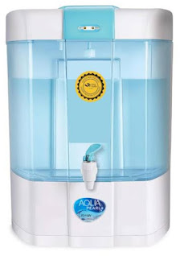

WATER PURIFIER SPECIALISTS IN KANPUR
RO service.
Done right.
Shri RAM R O SERVICE POINT, Yashoda Nagar.
Fast repair, installation and everyday care.

01 / WHAT WE DO
One place.
Every RO need.
A new purifier. A fresh installation. A repair that needs attention. Get local help with choosing, installing and caring for your RO.
RO repair
Low water flow, a leak or a purifier that won’t start? Let’s get to the cause.
Discuss a repairInstallation
Bring your purifier home. Speak to us about fitting it and setting it up.
Arrange installationService & care
Keep up with routine servicing, filter checks and your purifier’s maintenance.
Plan a servicePurifier sales
Find a purifier for your space. Ask about available models and current prices.
Explore your options02 / THROUGH OUR LENS
The purifiers.
The everyday work.
Purifier and filtration equipment shown on the Google profile.


Contact us for current model and spare-part availability.
More on Google03 / WORDS FROM OUR CUSTOMERS
Trusted service.
In their words.
“Fantastic service, soft spoken and also reached within 30 mins after calling.”
“Wonderful service. On time response and proper solution within specified amount.”
Review excerpts from the Shri RAM R O SERVICE POINT Google profile. 5.0 rating and 80 reviews checked on 27 September 2026.
YOUR LOCAL RO STORE IN BARRA
Care that comes
closer to you.
Call with your location and purifier model to check service availability and arrange a visit.
04 / LET’S TALK
A better everyday
starts with a call.
Tell us what your purifier needs.
We’ll help you with the next step.
Plan your visit
Call before visiting
Please confirm current and holiday hours directly with the business.